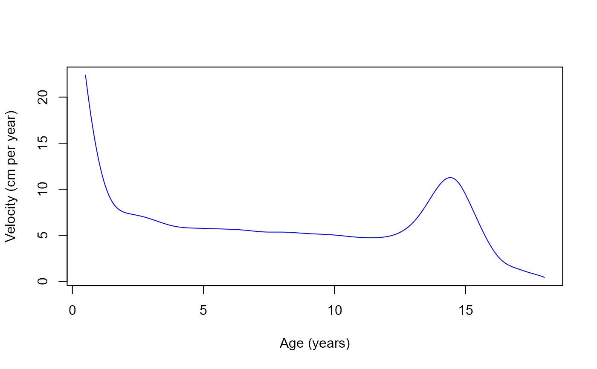

Fit a FPCA Growth Curve Model to measurements of a single individual
Source:R/growthfd.fit.R
growthfd.fit.RdThis function fits a model to the given measured data of a single individual.
Arguments
- model
FPCA growth model to be fitted
- age
Age at measured data points
- height
Height at at measured data points
- nprint
Verbosity
Examples
age <- c(6.9, 8.2, 10, 12.1)
height <- c(114, 122, 130, 141)
fit <- growthfd.fit(model.bgs.m, age=c(6.9, 8.2, 10, 12.1), height=c(114, 122, 130, 141))
#> It. 0, RSS = 485.178, Par. = 0 0 0 0 0 0 0 0 0 0 0 0
#> It. 1, RSS = 3.1692, Par. = -0.571629 0.0104595 0.168451 -0.0397391 -0.0379149 -0.0407143 -1.23888 0.145635 0.362663 0.0403704 -0.169151 0.0937608
#> It. 2, RSS = 3.09423, Par. = -0.711257 0.0267281 0.135298 -0.0516135 -0.0241193 -0.0431715 -1.1862 0.0493975 0.302214 0.0346394 -0.110317 0.105836
#> It. 3, RSS = 3.09138, Par. = -0.745629 0.0269389 0.128213 -0.0550852 -0.0218618 -0.0452404 -1.16704 0.0367215 0.292322 0.0307302 -0.0925947 0.104188
#> It. 4, RSS = 3.09127, Par. = -0.75232 0.0278816 0.127433 -0.0552554 -0.0222019 -0.0448357 -1.16353 0.0331268 0.29028 0.0293786 -0.0883632 0.10396
#> It. 5, RSS = 3.09126, Par. = -0.75385 0.0276893 0.127346 -0.055795 -0.0210223 -0.0448326 -1.16264 0.0325376 0.290008 0.0288755 -0.0878558 0.103682
#> It. 6, RSS = 3.09126, Par. = -0.754202 0.0281535 0.127379 -0.0551045 -0.0202275 -0.0451004 -1.16247 0.0321052 0.289953 0.028924 -0.0872671 0.103875
#> It. 7, RSS = 3.09126, Par. = -0.754202 0.0281733 0.127399 -0.0551138 -0.0197294 -0.0450847 -1.16247 0.0321439 0.289958 0.0290987 -0.0871899 0.103883
#> It. 8, RSS = 3.09126, Par. = -0.754202 0.0281742 0.1274 -0.0551128 -0.0197246 -0.0450833 -1.16247 0.0321443 0.289958 0.0291036 -0.0871885 0.103884
x11()
growthfd.plot(model.bgs.m, fit$par)
points(age, height)
x11()
growthfd.plot(model.bgs.m, fit$par, from=0.5, deriv = 1)

x11()
growthfd.plot(model.bgs.m, fit$par, from=0.5, deriv = 2)